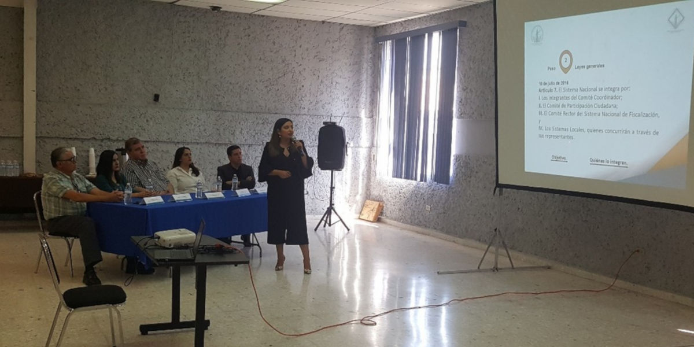
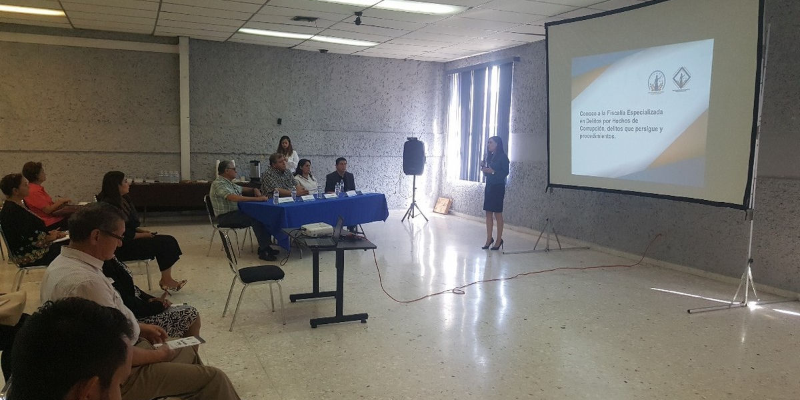

El personal de la Fiscalía Especializada en Delitos por Hechos de Corrupción del Estado llevó a cabo una capacitación a miembros de la sociedad civil y a la ciudadanía en general sobre los siguientes temas:
- Sistema Nacional Anticorrupción
- ¿Qué es la FEHC?
- Delitos que persigue y competencia de la FEHC
- Proceso Penal
- Papel de la Sociedad Civil en la lucha contra la corrupción
Dicho evento tuvo lugar en las instalaciones de la Cámara Nacional de Comercio, Servicios y Turismo de Saltillo, Coahuila en punto de las 10:00 hrs.
La consejera Jafia Pacheco Valtierra tuvo una intervención en la capacitación, informando a los asistentes acerca de cómo a través de la democracia, la ciudadanía puede participar y fortalecer positivamente las instituciones en beneficio de la colectividad.



07 mayo 2019